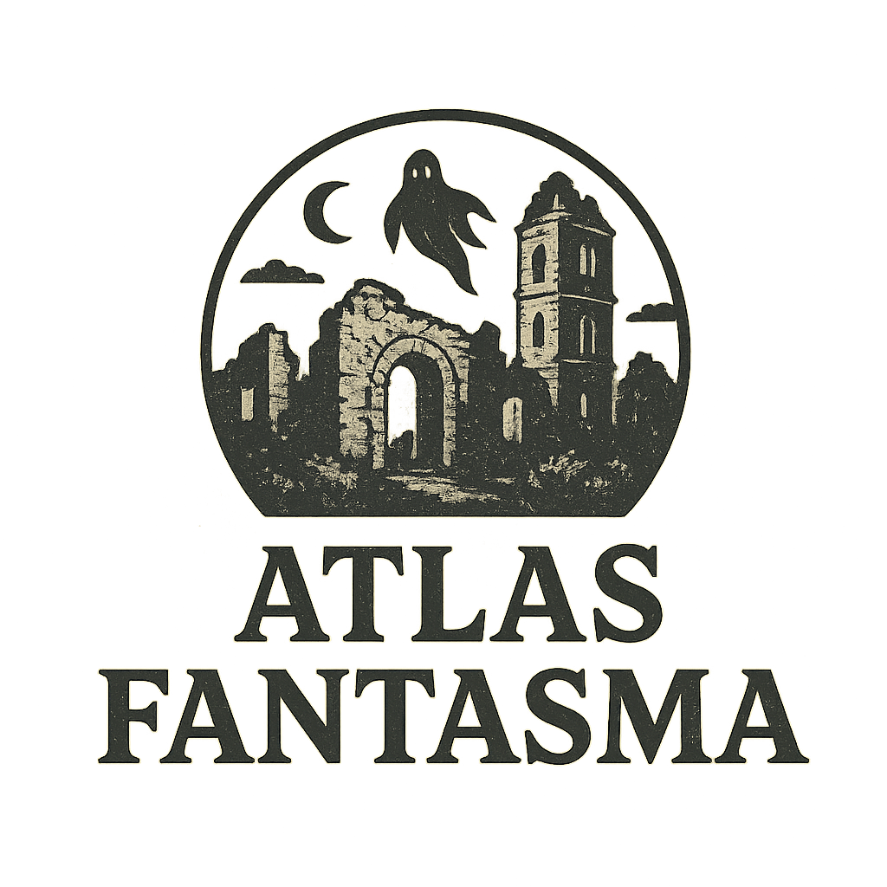
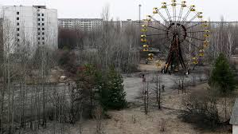
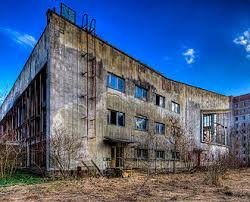
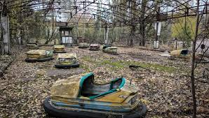

1. Ecos de la evacuación
Se dice que en algunas zonas se escuchan pasos y voces de antiguos residentes, recuerdos atrapados en la ciudad desierta.

Prípiat fue fundada en 1970 para albergar a los trabajadores de la central nuclear de Chernóbil y sus familias. La ciudad se construyó como un ejemplo de planificación urbana soviética moderna, con escuelas, hospitales, parques y edificios residenciales de varios pisos.
En 1986, la catástrofe nuclear de Chernóbil obligó a evacuar la ciudad de manera inmediata. Desde entonces, Prípiat permanece abandonada, convirtiéndose en un símbolo del desastre nuclear más grave de la historia.
Se dice que en algunas zonas se escuchan pasos y voces de antiguos residentes, recuerdos atrapados en la ciudad desierta.
El parque de diversiones de Prípiat, que nunca llegó a abrir completamente, se convirtió en un lugar icónico para la fotografía urbana y la exploración.
Desde la evacuación, la fauna local ha ocupado edificios y calles, dando la sensación de que la ciudad ha cobrado vida propia.


